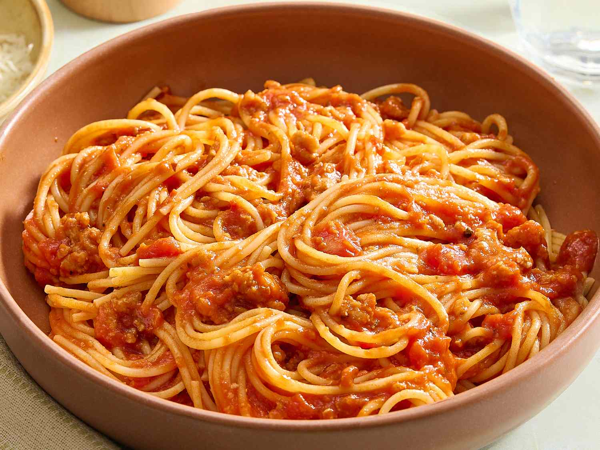

Description
Spaghetti is a popular pasta dish made with noodles, tomato sauce, ground meat, and seasonings.
It is a delicious meal often served during family gatherings and celebrations.
Ingredients
- 500 grams spaghetti noodles
- 500 grams ground pork or beef
- 1 pack spaghetti sauce
- 1 onion, chopped
- 4 cloves garlic, minced
- 2 tablespoons cooking oil
- Salt and pepper
- Grated cheese
Steps
- Boil water in a pot.
- Add the spaghetti noodles and cook until tender.
- Drain the noodles and set aside.
- Heat cooking oil in another pan.
- Cook the garlic and onion.
- Add the ground meat and cook thoroughly.
- Pour in the spaghetti sauce.
- Season with salt and pepper.
- Simmer the sauce for several minutes.
- Pour the sauce over the noodles.
- Add grated cheese and serve.